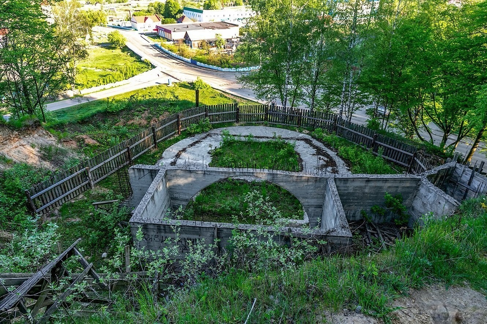

история деревни
На юго-востоке Калинковичского района расположена деревня Юровичи – один из самых древних населенных пунктов в Беларуси. Обнаруженная стоянка человека у деревни имеет возраст более 25 тысяч лет, что относит ее к одному из самых ранних поселений, обнаруженных на территории Беларуси. Также археологами были найдены городища различных исторических эпох и курганные могильники. По неподтвержденным легендам на месте Юрович в 12-13 веках существовал древний город, впоследствии сожженный татарами. Первое упоминание об Юровичах относится к 30-м годам 15 века. С 17 века в деревне был свой деревянный монастырь. Во второй половине 17 века в Юровичи пришли иезуиты, которыми были построены свои костелы, впоследствии сгоревшие. После пожара был возведен уже кирпичный храм, впоследствии не раз закрывавшийся властями, а затем переданный во воладение православной церкви. Сейчас это Свято-Рождество-Богородичный мужской монастырь. Была сначала открыта школа, а во второй половине 19 века – мужское и женское народные училища. К началу прошлого века в местечке Юровичи более тысячи жителей, функционировали церковь, школа, училища, почта, аптека, магазины, лавки и трактиры. Во время Великой Отечественной войны многие уроженцы Юрович погибли в борьбе против оккупантов, более 300 советских солдат были убиты при освобождении села. Их останки захоронены в братской могиле. Недалеко от деревни на реке Припять расположена пристань, что способствует развитию туризма.
Стоянка верхнего палеолита
Расположена в центре агрогородка Юровичи Калинковичского района, на левом берегу р. Припять, на юго-западном склоне оврага Мураваны Шлях (Каменный Путь), вытянутого с юго-востока на северо-запад, на высоте 24–25 м над уровнем воды. Культурный слой на глубине 8–9 м состоит из 2 горизонтов, разделенных прослойкой суглинка. В нижнем горизонте обнаружены остатки овального строения на фундаменте из черепов, крупных плоских и трубчатых костей мамонтов. В верхнем горизонте прослежены остатки костров, выложенных камнями, и руины сильно деформированных жилищ из костей мамонта, больших камней и плит валунового происхождения. На стоянке обнаружено около 50 кремневых артефактов, кости мамонта, коня, быка, песца, северного оленя, шерстистого носорога. Среди каменных орудий одно- и двухплощадочные нуклеусы, сдвоенный скребок и проколка, пластины и их фрагменты, в том числе со скошенным ретушью концом, отщепы, массивная пластина со следами ретуши, микропластинки с ретушированным краем, микропластины с притупленной спинкой, острия типа граветт, массивный клинок на пластине.
Открыта в 1928 г. Ю. Попелем. Впервые исследована в 1929 г. К. М. Поликарповичем. Датируется XXV тысячелетием до Р. Х. (верхний палеолит – древний каменный век) и считается древнейшим человеческим поселением на территории Беларуси. Небольшое количество находок из кремня и их типологический состав, палеонтологические материалы свидетельствуют о специализированном характере памятника и позволяют рассматривать его как место добычи животных (охотничий лагерь). В нем жили 15–20 человек («кроманьонцев», людей современного физического типа), преимущественно родственников по матери. Вероятно, в стоянке было 1–3 жилища овальной формы, 4–6 м в поперечнике. Каркас строился из длинных костей и жердей и накрывался шкурами, нижняя часть укреплялась валунами, черепами и большими костями животных, закопанными в землю. В жилище поддерживался огонь, для чего в костер подкидывали дрова, кости зверей, которые горели лучше дерева. Специальное место было отведено для женщин и стариков, а также для хранения ценностей рода. Стоянка относится к кругу памятников «восточного граветта». Стоянка просуществовала до X тысячелетия до Р. Х. и исчезла в результате наступления ледникового периода.

Юровичский костел и корпус коллегиума иезуитов
Корпус коллегиума — двухэтажное П-подобное в плане здание. Симметричная объемно-пространственная композиция подчеркнута двумя трехярусными башнями на углах дворового фасада. Стены ритмично расчленены пилястрами, оконные проемы имеют фигурные обрамления. Планировка галерейная, с большим залом в центре. Перекрытия обоих этажей сводчатые. Костел. Трехнефовая каменная базилика с вытянутой полукруглой апсидой и двухбашенным главным фасадом, который поделен на три яруса развитыми антаблементами, расчленен связками пилястр, крапован фронтонами. Разнообразные ниши и окна украшены сложными профилями и лепкой. Боковые стены расчленены спаренными лопатками и неглубокими нишами. По обе стороны алтаря двухэтажные сакристии. К южной сакристии прилегает двухэтажный коридор, который ведет в здание коллегиума. Под костелом расположена крипта. Следует отметить, что главный фасад костела имеет большое сходство с фасадом костела иезуитов в Каменец-Подольском (Украина), возведенного в 1731-1772гг согласно проекта архитектора Павла Гижицкого. Интерьер святыни украшали девять алтарей, главный из которых назван в инвентаре 1817г. «старосветским» с образом Матери Божьей, выполненный еще до завершения строительства костела в 1732 г. резчиком Тарасом Аршицким и позолоченный мастером Степаном Петровским.
Костел в честь Рождения Девы Марии Пречистой и коллегиум иезуитов — памятник архитектуры позднего барокко республиканского значения, находится в центре деревни Юровичи Калинковичского района на берегу реки Припять. Комплекс включает костел и корпус коллегиума, объединенные в единую объемно-пространственную композицию. Расположен на высоком пригорке за высокой каменной оградой с въездными воротами (сохранились южная и западная стены) и окружен плодовым садом По углам ограды и по обе стороны ворот круглые в плане башни с бойницами. Первоначально строения комплекса были деревянными и уничтожены пожаром 1705 года. Кирпичные постройки сооружены в 1726 — 1746гг. Первые сведения о резиденции ордена иезуитов в этом небольшом местечке Белорусского Полесья относятся к 1677-1678гг и связаны с привилегиями короля Яна III Собеского. В «Люстрационном инвентаре Юровичской коллегии иезуитов», составленном 22 декабря 1773 года после кассации ордена, отмечено:»Костел большой, каменный, пышный, крытый черепицей, с двумя башенками впереди…» В одной из башен находились большие часы, которые били каждую четверть часа, в другой — «колоколов сильных — 3». Башни в то время были покрыты медными листами, но еще не закончены. В 1817 г. комплекс был передан бернардинскому ордену и составлено его описание. В 1832 году , после восстания 1830-1831гг костел был закрыт, но в 1842г. возвращен католикам в качестве приходского костела. После восстания 1863г. в ходе кампании по закрытию римско-католических костелов и монастырей был закрыт и Юровичский. «Юридических фактов, — отмечал в своем рапорте военный начальник Мозырского и Речицкого уездов, — о принятиии ксендзами участия в мятеже хотя и нет, но слухи заставляют сомневаться в их политической благонадежности», После перестройки костела по православным архитектурным канонам в двенадцатикупольный величественный православный собор устроенная в нем Рождество-Богородицкая церковь была приходской. С 1864г. ее история связана с жизнью священника Александра Бирюковича, который умер в 1916г. и похоронен у монастырской стены. Двадцатый век оставил очень мало сведений о Юровичской церкви. Богосужение в ней было прекращено в 1930-х годах. До 1988 г. в зданиях храма и коллегиума находился дом-интернат. В 1994г. остройки были переданы в ведение Туровской епархии, после чего в 1995г . началолсь возрождение Юровичской обители.Здесь создан и открыт Свято-Рождество- Богородицкий женский православный монастырь. В нем действовали две домовые церкви (летняя и зимняя) в корпусе коллегиума, кельи для сестер, паломников, настоятельский домик, хозяйственные постройки. По решению Синода Белорусского экзархата Русской православной церкви от 18 сентября 2005 г. Юровичский женский монастырь преобразован в мужской. Каменное здание величественного храма нуждается в капитальном ремонте.